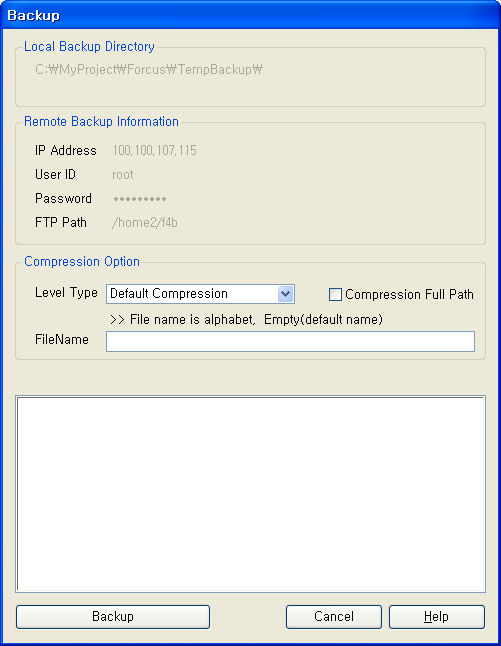
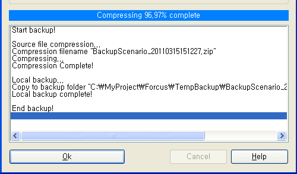

| 프로젝트 백업 | 시작 다음 이전 |
작성한 프로젝트를 지정한 로컬 또는 원격지의 서버로 백업 합니다. 백업 정보의 설정은 Tools>Options 의 Backup Tab 에서 설정 할 수 있습니다.

Project>Project Backup 메뉴를 선택하면 위와 같은 Backup Dialog 가 팝업 됩니다.
Local Backup Directory
- 설정한 로컬 백업 디렉토리의 정보가 표시 됩니다.
Remote Backup Information
- 설정한 FTP 백업 정보가 표시 됩니다.
Compression Option
프로젝트에 포함된 파일들을 압축하기 위한 압축 옵션 입니다.
Level Type : 압축 타입을 설정합니다. Compression Full Path Check Box : 압축 시 경로정보를 모두 포함하여 압축 해제 시 압축을 해제하는 폴더에 전체 경로를 만들고 압축을 해제 하는 옵셥입니다.(체크 하지 않으면 압축을 해제하는 폴더에 프로젝트 이름 디렉토리만 만들고 압축을 해제 합니다.) FileName : 압축파일 이름을 입력하는 부분으로 "입력한 이름_" + 년월일시분초 (YYYYMMDDhhmmss) + ".zip" 로 파일이 생성됩니다.(이름을 입력하지 않으면 "BackupScenario_" 가 Prefix 로 붙어서 만들어 집니다)
Backup Button : Project Backup 을 시작 합니다.(백업이 완료되면 OK 버튼으로 바뀝니다)
- Options 의 Backup Tab 에 Use Local Backup, User Remote Backup 을 체크 하는 부분이 있는데 체크 하지 않으면 정보가 있더라도 백업 하지 않고, 둘다 체크 하면 로컬, 원격 모두 백업 합니다.

Cancel Button : Project Backup 을 취소 합니다.
|
| Copyrights(C) Bridgetec.co.kr. All Rights Reserved | 시작 다음 이전 |